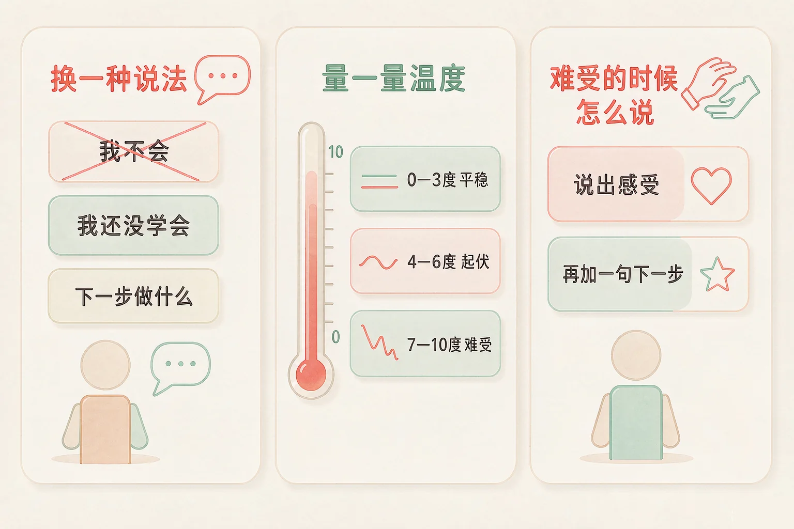
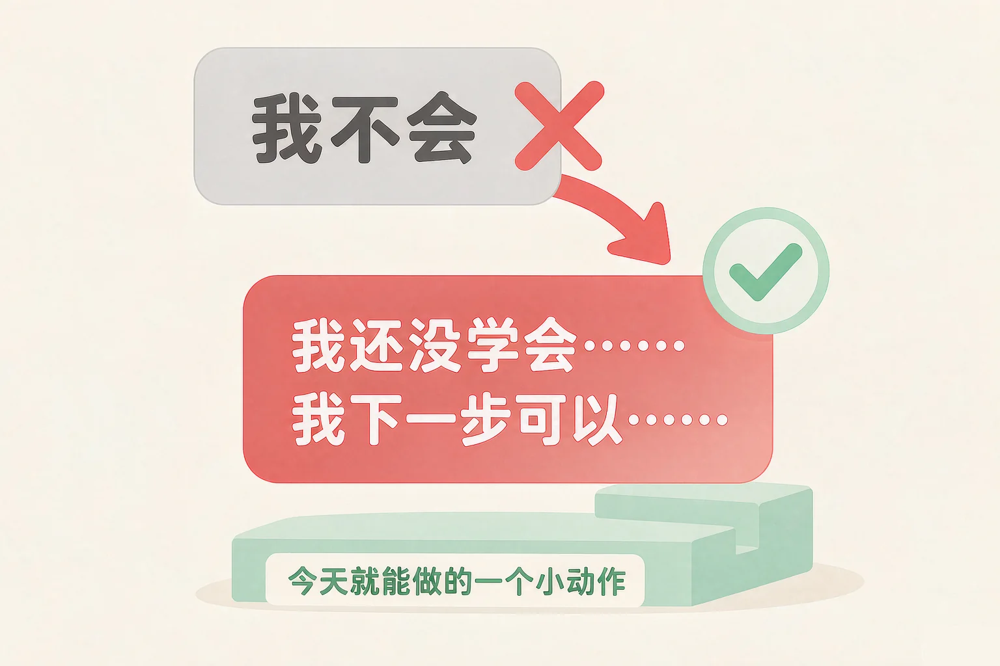
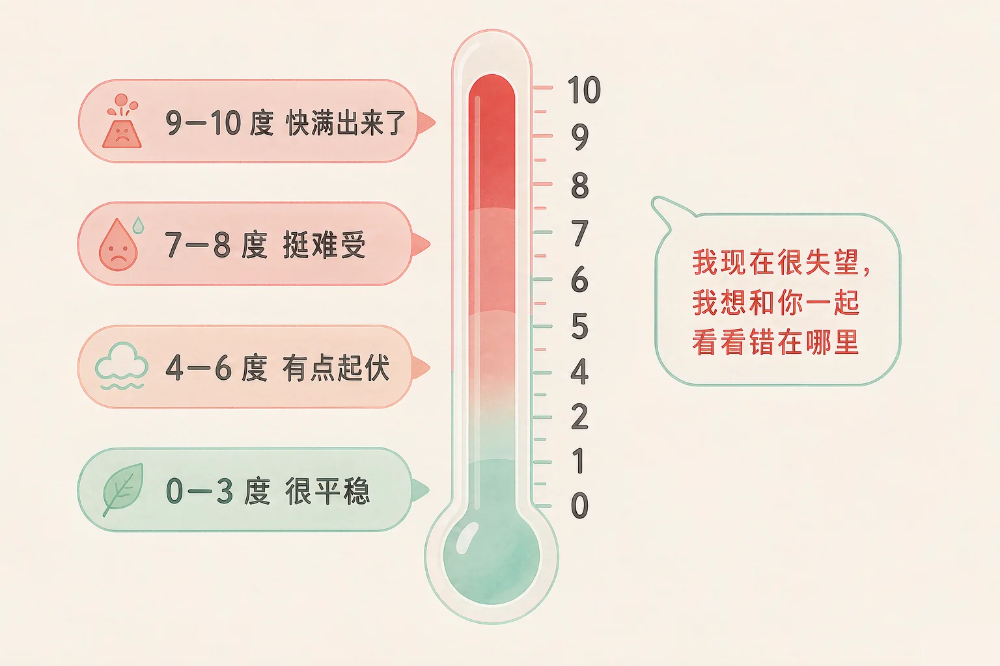

Gallery
v1.0.0 · skill v7.22.0
小学四年级 · 学习辅导
作业本上那句「我不会」说出来以后，笔就不想动了——这句话能换一种说法吗？

选一个你真正想知道的问题，后面的活动都会围着它转。
选择或输入后，这节课会围绕你的问题展开。
先凭直觉选一个，选完立刻看到解释——错了也没关系，正好知道要重点听哪里。
1. 下面哪句话更像「成长的」说法？
「还没学会」说的是现在，「我下一步可以……」跟着一个能动手的小步骤，路就留着了。错因提醒：常见错误是把「这一次没做到」误认为「我这个人不行」——要挑的是说法，不是人。
2. 考试退步了，心里很难受。下面哪个做法更合适？
先量温度，是让自己先看清楚现在有多难受；说出来，别人才知道怎么帮你。错因提醒：有人误认为「不看卷子就不难受了」——难受会过去，可错题还在那里，下次还会在同一个地方丢分。
3. 「我还没学会在大家面前发言」这句话后面，最适合补上哪一句？
「还没学会」后面一定跟着一个下一步，而且这一步要小到你今天就能做。错因提醒：最容易搞混的是把「还没」当成抱怨的借口——成长的说法后面一定有一个动作，没有动作的句子，还停在原地。
为什么要学这一课？
我们已经学过怎么给心里的感觉起名字，也知道了难受的时候可以说出来（And）；可是学习上一遇到难题，心里那句「我不会」来得特别快，话说出来之后，笔就放下了，人也跟着停住（But）；所以这节课先学一件很小、很有用的事——把这句话换一个说法（Therefore）。
「我不会」和「我还没学会」，说的都是现在，差别在后面有没有一个下一步。
「我不会」像一扇关上的门
它是一句结论，说完就停住了。门关上以后，连试一次的念头都没有了。
「我还没学会」留着一扇门
它说的是现在，却没有把以后说死，所以它后面一定还会跟着一个动作。
可以照着说的句式：
我还没学会（哪一件事），因为我（还没弄懂 / 还没练够），我下一步可以（一个今天就能做的小动作）。

有的同学误认为「说自己还没学会，是在给自己找借口」。这里最容易搞混的是两种句子的落脚点：找借口的句子停在原地，说完还是不动；成长的说法后面一定跟着一个具体的下一步。判断的办法很简单——这句话后面有没有一个动作？有动作，就不是借口。
🔍 深层理解 换个角度再看一遍这件事，看看能不能说出背后的原理。
拆开它：一句话拆开看是两段：前一段说我现在在哪里，后一段说我要往哪里走。缺了后一段，它就从一句话变成了一堵墙。
比较它：「我永远都学不会」和「我这次还没学会」——两句话里，只有一个留着明天。换个词，明天就回来了。
迁移它：不止学习。跳绳、画画、和同学相处，凡是心里冒出「我不会」的时候，都可以补上一个下一步。
先点一句心里常冒出来的「我不会」，再从三种改写里选一个。选得不太合适也不会说你错，我会告诉你这样可能会发生什么，还可以试试什么。
先点一句你自己也说过的话。
轮到你自己写一句：
想一想，最近哪一件事让你说过「我不会」？把它改写成你的句子。
心里难受的时候，光说「我不高兴」别人也不知道怎么帮你。可以给自己画一根情绪温度计，从 0 度到 10 度。
0—3 度
很平稳。适合做需要动脑的事。
4—6 度
有点起伏。做三次慢慢的呼吸，喝几口水。
7—10 度
挺难受。找一个人说几句话，或者写下来。

有的同学误认为「温度高就是不好，得赶紧压下去」。温度只是一个信号，像手碰到热水会缩回来那样，它在提醒你现在需要什么。真正要练的不是把温度压下去，而是量准它，然后说出那句让别人听得懂的话。
说完感受，再补一句下一步：
「我现在很失望，因为我很想考好。我想和你一起看看错在哪里。」——后面这半句，才是让事情往前走的那半句。
🔍 深层理解 换个角度再看一遍这件事，看看能不能说出背后的原理。
看见它：温度看不见，可身体会替它说话：脸红、手心出汗、胸口发闷、鼻子发酸。先看见身体，就看见了温度。
解释它：为什么量出来好受一些？因为说不清的时候最闷，像一团打了结的线；给出一个数，心里就知道自己站在哪儿了。
迁移它：和同伴闹别扭、被误会、家里有事的时候，都可以先量一量，再决定现在做什么、找谁说话。
拖动滑块，或者直接点一个温度按钮，找到最像你现在的那个数。再给你的感觉起一个名字，看看这个温度下可以说哪一句话。
拖动滑块，看看你这个温度可以说哪一句话。
情境：数学卷子发下来，比上次退步了不少。小满一眼看到那几个红圈，脸一下热了，心里那句话又冒出来了——我不会。请你陪他走四步。
有的同学误认为「心情好了再学，成绩才会好」，于是先等心情过去。小满这四步里，心情没有立刻变好——他量出来是八度，也确实难受。可是他把难受说出来了，并且给自己定了一个能做到的小步骤。不是等难受走了才学，而是带着难受先做一小步。
说给同桌听：小满这四步里，哪一步你自己已经做到了？哪一步还想再练一练？
先凭直觉选一个，选完立刻看到解释——错了也没关系，正好知道要重点听哪里。
1. 下面哪句话更像成长的说法？
给自己一个具体的小步骤，比给自己一个结论有用得多。错因提醒：常见错误是把「还没练够」误认为「天生不行」——把练习次数的问题，当成了自己的能力问题。
2. 关于情绪温度计，下面哪种理解更合适？
温度像身体的疼感一样，是提示，不是评价。量准它，才知道现在该做什么。错因提醒：有人误认为「难受就得马上压下去」——压下去容易，可问题还在；先量一量、说出来，反而更快走过去。
3. 考试没考好，下面哪种说法对自己更有帮助？
先说感受，再补一句下一步，是对自己最有帮助的一种说法，别人也知道该怎么帮你。错因提醒：最容易搞混的是「说出感受」和「给自己下结论」——「我很失望」说的是心情，「我永远都考不好」说的是命运。
六张卡片都是考试没考好以后可能出现的心思和做法。先在左边点一张，再点上面两栏中的一个。分错了也不扣分，我会告诉你它更合适放在哪里，以及为什么。
先在左边点一张卡片。
写出你自己最想说的那一句：
格式是：先说感受，再说下一步。写下来，下次遇到就照着说。
先凭直觉选一个，选完立刻看到解释——错了也没关系，正好知道要重点听哪里。
1. 上课回答问题答错了，有同学笑了一下，你心里很不舒服。下面哪个做法更合适？
把紧张说出来，再给自己一次机会，比从此不举手有用得多；下课去找人理论，只会让事情更大。错因提醒：有人误认为「不举手就不会出错」——不出错的办法确实有，可同时也把学会的机会一起关掉了。
2. 课文背了五遍还是背不下来，心里有点烦。下面哪个做法更合适？
烦的时候，先把任务变小一点再开始，往往比硬撑更容易走下去。错因提醒：常见错误是误认为「背不下来就是不够努力」——有时候是方法要换，不是力气要加。
3. 好朋友这次考得比我好很多，你心里有点不是滋味。下面哪个做法更合适？
羡慕是很自然的心情，承认它，它就不会一直在心里打转；问一句方法，你还多学到一样东西。错因提醒：容易搞混的是「羡慕这件事」和「否定自己这个人」——别人考得好，说明这条路走得通，不等于你走不通。
还要记牢一件事：学一样新东西，一开始觉得难、觉得不会，几乎每个人都会遇到，这很正常。如果有一段时间你一直很难受，上课也听不进去，说给老师、爸爸妈妈听一听，是很聪明的做法。
给别人讲一遍：请用「还没、温度、下一步」这三个词，说清楚你上一次没考好的经过。
再动一动手：画一画你的情绪温度计，在三个温度旁边，各写一个你自己做得到的小办法。
三层练习，做完第一、二层就算通关；第三层留给愿意继续探索的同学。
⭐ 基础巩固（必做）
⭐⭐ 能力应用（必做）
⭐⭐⭐ 迁移挑战（选做）
左边是学它之前要先会的，右边是学会之后可以继续探索的，下面是同一领域的伙伴知识。
图谱正在加载：首次进入需下载知识索引（约 1–3 秒），加载完成后本行会自动消失。